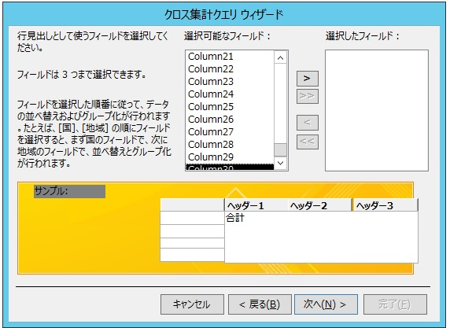

(※ 2018 年 2 月 27 日に Japan Office Support Blog に公開した情報のアーカイブです。)
2018/6/26 Update
C2R インストーラー形式の Access 2016 バージョン 1806 で本問題が修正されました。
こんにちは、Office サポートの佐村です。
本記事では、Access 2013 以降で、列が多い (およそ 14 以上) 場合に「クロス集計クエリ ウィザード」で列見出しとして
表示できないフィールドがある現象について説明します。
現象
Access 2013 以降で、列 (Column) が多いテーブルに対して「クロス集計クエリ ウィザード」を用いた場合、
列見出しに設定するフィールドの選択欄で最後のフィールドが表示されません。
再現手順 :
1. 新規 Access データベースを作成し、列の多いテーブルを作成します (例として 30 列準備します)。
2. リボンメニュー [作成] – [クエリ] – [クエリ ウィザード] を選択します。
3. 新しいクエリから「クロス集計クエリ ウィザード」を選択して「OK」ボタンをクリックします。
4. クロス集計クエリ ウィザードで、対象のテーブルを手順1. で作成したテーブルとし、「次へ」ボタンをクリックします。
5. 行見出しとして使うフィールドを選択する画面で「選択可能なフィールド」で最終列が上半分までしか表示されません (選択は可能です)。

6. 任意のフィールドを選択し、「次へ」ボタンをクリックします。
7. 列見出しとして使うフィールドを選択する画面が表示されます。
結果 :
手順 7 で、列見出しとして使うフィールドを選択する画面で選択するフィールドに、最終フィールドが表示されず、選択できません。
以下の画面では、 Column30 が存在していますが、Column30 が表示されず選択することが出来ません。

原因
Access 2013 以降で発生します。
日本語でローカライズされた Access のウィザード画面の表示の問題によりこの現象が発生します。
(英語版の Access 2013 以降では本現象は発生しません)
解決方法 ※2018/6/26 Update
Access 2016 C2R インストーラー形式の 2018年6月25日にリリースされた月次チャネルバージョン 1806 (10228.20080) で修正されました。
このバージョン以降では、クロス集計ウィザードで列の多いテーブルを指定しても列が指定できなくなるという問題は発生しません。
なお、現在のところ MSI 形式での修正プログラムのリリース予定はありません。
本修正ビルドは 2018年9月に「半期チャネル(対象指定)」、2019年1月に「半期チャネル」にリリースされます。
運用回避方法
以下のいずれかの方法で回避します。
A) クロス集計クエリ ウィザードの列見出しではいったん別の列を選択し、「クエリデザイン」で改めて正しい列を指定する
B) クエリを SQL ビューで表示し、PIVOT 句に指定する列を書き換える
C) 英語版の Access 2016 を利用する
D) 列の少ないテーブルで運用する
E) 列の最後にダミー列を追加する
A) の対処方法では、一度列見出しとして別のフィールドを選択し、クロス集計クエリ ウィザードの完了画面で
「クエリのデザインを編集する」を選択して「完了」ボタンをクリックします。

クロス集計クエリをデザインビューで開いた画面に遷移するので、列見出しを本来設定したかった列に設定しなおします。

なお、デザインビューで、表示を「SQL ビュー」に変更することで、SQL クエリを表示できるため、PIVOT 句を直接別のフィールドに変更することも可能です。(対象方法 B)
今後の修正予定について
Access 2013 および Access 2016 の MSI インストーラー形式では、修正される予定はございません。
上述の「対処方法」によって運用にてクエリを作成することをご検討くださいますようお願いいたします。
本情報の内容 (添付文書、リンク先などを含む) は、作成日時点でのものであり、予告なく変更される場合があります。